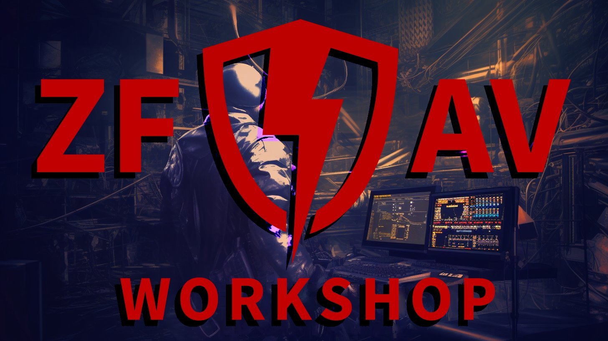
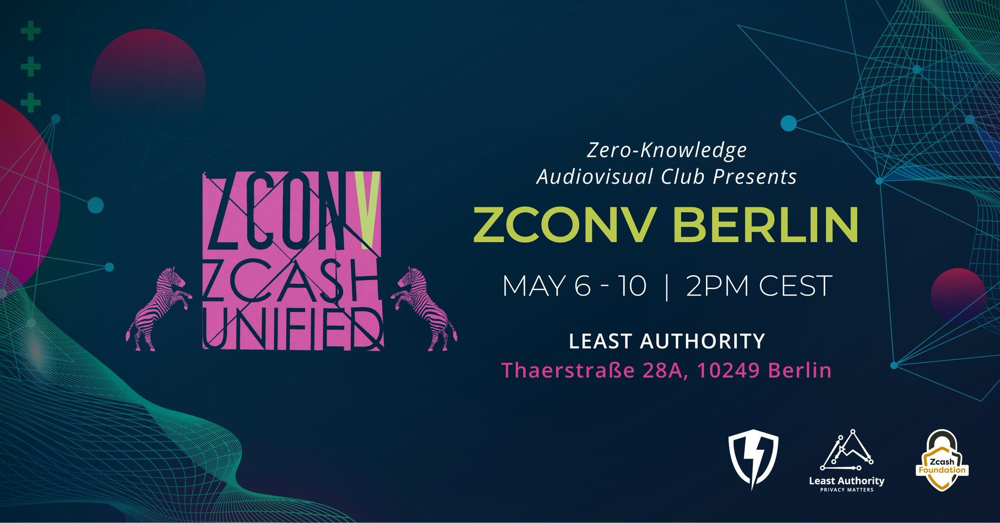

A good workshop includes real back-and-forth, shared exploration, and useful outcomes such as skills, artifacts, or clear next steps.
Bring questions. Bring half-finished ideas.
On this page:
Why facilitate
Facilitating a workshop is a way to share practical knowledge, improve your teaching, and meet collaborators. Facilitators receive a Zcash payment.

What kinds of workshops fit
Workshops can cover many kinds of work: technical topics like tooling or node operation, media production such as recording and livestreaming, community skills like facilitation or governance, or creative experiments and build-with-me sessions.
How it works
Propose an idea. Explain what you will teach or explore and what people will walk away with.
We review the idea and shape it together. We tighten the scope, clarify outcomes, and design the session for participation.
We schedule and promote it so people can show up.
We do a quick test session together to check audio, video, and screen sharing.
You host it live where your people already are, such as a call, livestream, or community space. Participation matters: questions, exercises, and discussion.
The session should be recorded so the knowledge stays useful after the session.
Workshops must be recorded for facilitator payment. If a session cannot be recorded, it does not run as a Zk Av Club Workshop. Recording may be done by the facilitator or with help from the club when possible.
When capacity allows, we may help with recording, restreaming, or simultaneous translation.
Past workshops
Common themes:
Editing clinics: open-source tools, clip workflows
Remote production: livestreaming, restreaming, privacy-first calls, broadcast setups
Accessibility: live translation, real-time transcription, speech-to-text
Recording Station practice: field workflow, recaps, lessons learned

What to include in your proposal
Topic and learning outcomes
Format such as a single session or series, demo, guided exercise, teardown, clinic, or discussion
Date window and duration
Language
Materials or links such as repositories, docs, slides, or examples
Promotion: share the workshop once with your network
How we collaborate
Zk Av Club supports people doing real work. We collaborate openly, give clear credit, and focus on durable public knowledge through recordings and documentation. Workshops are treated as community infrastructure, not content farming.
Apply to facilitate a workshop
Have an idea, even a rough one. Send it in and we will help shape it.